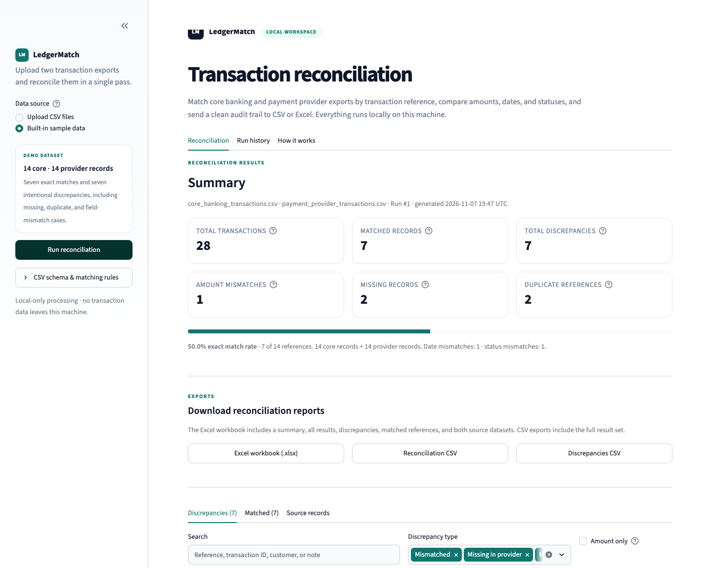

Search the exception queue
Filter by reference, transaction ID, customer, status, or discrepancy type.
Local-first reconciliation for payment operations
Core banking and payment provider exports rarely agree on the first pass. LedgerMatch gives operations a clear, reference-by-reference view of what matched, what is missing, what duplicated, and what needs attention.

The control surface
LedgerMatch does not guess at a match. It aligns the shared reference, compares the fields that matter, and shows the difference before you sign anything off.
The review screen is built for investigation, not just reporting. Search by reference, filter by exception type, and see both sides of the record without opening another spreadsheet.
Filter by reference, transaction ID, customer, status, or discrepancy type.
Core and provider values sit side by side, with the review note and source IDs in reach.
A styled Excel workbook, a full reconciliation CSV, or just the exceptions.
Every completed reconciliation is stored in local SQLite history with a saved exception snapshot.
From exports to evidence
No new ledger, no data warehouse, no integration project. Start with the files your teams already produce.
Upload the core banking CSV and the payment provider CSV, or open the built-in demo to see a complete run.
Matched references are separated from the breaks. Search and filter the records that need an owner.
Download the workbook or CSV, share the reviewed result, and keep the local run in SQLite history.
Run it locally
LedgerMatch is a Python and Streamlit application, not a hosted reconciliation service. Uploads are processed on your machine and run history lives in a local SQLite file.
git clone https://github.com/Mo-Shakib/LedgerMatch.git
cd LedgerMatch
python3 -m venv .venv
source .venv/bin/activate
pip install -r requirements.txt
streamlit run app.pyStart with the demo
Run the built-in sample, inspect the intentional exceptions, then bring your own files. The source, documentation, and test suite are ready on GitHub.